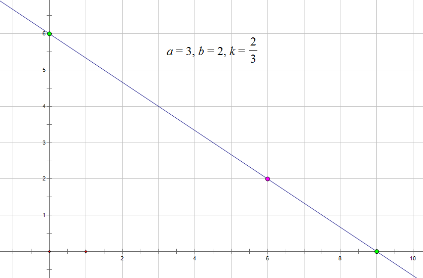

邱老师是妖怪爱好者，他有 $n$ 只妖怪，每只妖怪有攻击力 $\mathrm{atk}$ 和防御力 $\mathrm{dnf}$ 两种属性。邱老师立志成为妖怪大师，于是他从真新镇出发，踏上未知的旅途，见识不同的风景。
环境对妖怪的战斗力有很大影响，在某种环境中，妖怪可以降低自己 $ka$ 点攻击力，提升 $kb$ 点防御力或者，提升自己 $ka$ 点攻击力，降低 $kb$ 点防御力。$a, b$ 属于正实数，$k$ 为任意实数，但是 $\mathrm{atk}$ 和 $\mathrm{dnf}$ 必须始终非负。
妖怪在环境 $(a, b)$ 中的战斗力为妖怪在该种环境中能达到的最大攻击力和最大防御力之和，$\mathrm{strength}(a, b) = \max(\mathrm{atk}(a, b)) + \max(\mathrm{dnf}(a, b))$。环境由 $a, b$ 两个参数定义，$a, b$ 的含义见前文描述。
比如当前环境 $(a = 3, b = 2)$，那么攻击力为 $6$，防御力为 $2$ 的妖怪，能达到的最大攻击力为 $9$，最大防御力为 $6$。所以该妖怪在 $(a = 3, b = 2)$ 的环境下战斗力为 $15$。因此，在不同的环境，战斗力最强的妖怪可能发生变化。
作为一名优秀的妖怪训练师，邱老师想发掘每一只妖怪的最大潜力，他想知道在最为不利的情况下，他的 $n$ 只妖怪能够达到的最强战斗力值，即存在一组正实数 $(a, b)$ 使得 $n$ 只妖怪在该环境下最强战斗力最低。
第一行包含一个正整数 $n$ ($n \leq 10^6$)，表示有 $n$ 只妖怪。
接下来 $n$ 行，每行包含两个正整数 $\mathrm{atk}$ 和 $\mathrm{dnf}$ ($\mathrm{atk}, \mathrm{dnf} \leq 10^8$)，表示妖怪的攻击力和防御力。
输出一行一个实数，表示在最不利情况下最强妖怪的战斗力值，保留 $4$ 位小数。
思考每个妖怪的战斗力的几何意义。由于妖怪提升 (改变) 各种能力是一个线性变换，因此战斗力只和 $a$ 和 $b$ 的比值有关。
设 $k = \dfrac ba$，我们把攻击力为 $x$，防御力为 $y$ 的妖怪看作平面第一象限上的一个点 $(x, y)$，则它所能达到的攻击力和防御力所对应的点的集合应该为过 $(x, y)$ 且斜率为 $-k$ 的一条直线，如下图所示。
可以发现，此时这个妖怪的战斗力就是该直线在两坐标轴上的截距之和。
因此对于固定的 $k$，我们要过每个点作一条斜率为 $k$ 的直线，使得截距的最大值最小。
容易发现，能对截距最大值产生贡献的点一定在原点集的凸包上，
故可以先对点集求一个上凸包，然后考虑计算最终的答案。
Solution 1:
考虑对于单独一个点，容易验证，战斗力对于 $k$ 的函数是一个单峰函数 (双钩函数的性质)。
而若干个单峰函数的最大值还是一个单峰函数，因此我们可以三分 $k$ 的值，从而得到答案。当然，如果使用黄金分，可以减少一倍常数。
时间复杂度 $O \left( C \left| \log eps \right| \right)$ ($C$ 为凸包点数，下同)。
Solution 2:
可以发现，对于一个固定的 $k$，最大战斗力是由凸包上斜率为 $-k$ 的切线 (支撑线) 所切的点决定。
因此我们可以枚举切点，从而算出可行 (在该点相切) 直线的斜率，由函数单调性直接求解。
时间复杂度 $O \left( C \right)$。
#include <bits/stdc++.h>
#define N 1000005
#define PHI 0.6180339887498948482
typedef long long ll;
typedef long double ld;
const ld eps = 1e-6;
struct vec2 {
ll x, y;
vec2 (ll x0 = 0.0, ll y0 = 0.0): x(x0), y(y0) {}
vec2 * read() {scanf("%lld%lld", &x, &y); return this;}
inline vec2 operator + (const vec2 &B) const {return vec2(x + B.x, y + B.y);}
inline vec2 operator - (const vec2 &B) const {return vec2(x - B.x, y - B.y);}
inline vec2 operator * (ll k) const {return vec2(x * k, y * k);}
inline ll operator * (const vec2 &B) const {return x * B.x + y * B.y;}
inline ll operator ^ (const vec2 &B) const {return x * B.y - y * B.x;}
} p[N], *st[N];
int n, top = 0;
ld L, R, d, mL, mR, fL, fR;
inline void up(ld &x, const ld y) {x < y ? x = y : 0;}
inline bool cmp(const vec2 A, const vec2 B) {return A.x > B.x || A.x == B.x && A.y < B.y;}
ld f(ld x) {
int i; ld ret = -INFINITY;
for (i = 0; i < top; ++i)
up(ret, st[i]->x * (x + 1.0) + st[i]->y * (1.0 / x + 1.0));
return ret;
}
int main() {
int i;
scanf("%d", &n);
for (i = 1; i <= n; ++i) p[i].read();
std::sort(p + 1, p + (n + 1), cmp);
for (i = 1; i <= n; ++i) {
for (; top > 1 && (p[i] - *st[top - 2] ^ *st[top - 1] - *st[top - 2]) >= 0; --top);
st[top++] = p + i;
}
L = 0.0001; R = 10000.0; d = (R - L) * PHI;
fL = f(mL = R - d); fR = f(mR = L + d);
for (; d > 4e-12; )
if (d *= PHI, fL <= fR) {
R = mR; mR = mL; fR = fL; fL = f(mL = R - d);
} else {
L = mL; mL = mR; fL = fR; fR = f(mR = L + d);
}
printf("%.4Lf\n", fR);
return 0;
}
坑1：判 $eps$ 的时候如果使用函数值，则需要使用 fabs。
坑2：(对 Solution 1) 这题对精度需求比较高，推荐使用 long double 并合理控制 $eps$ (与时间权衡)。